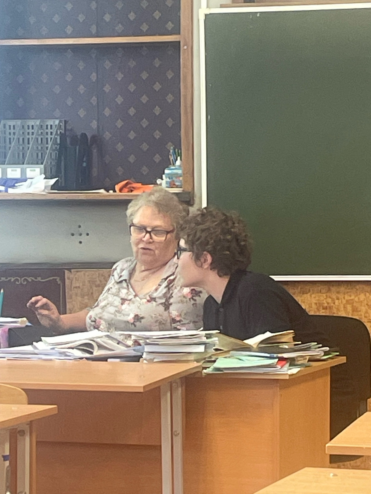

ТАТЬЯНА АФАНАСЬЕВНА ЛУЧШИЙ УЧИТЬЕЛЬ 
ПОЧЕМУ СПРОСИТЕ ВЫ?
Профессиональные качества:
1 :Глубокое знание предмета. Компетентный учитель должен в совершенстве знать русский язык, быть начитанным, разбираться в литературном процессе разных эпох и стран. Это позволяет эффективно передавать знания и развивать у учеников аналитические навыки.
2 :Любовь к предмету и к детям. Любовь к русскому языку и литературе вдохновляет педагога делиться этим увлечением с учениками, а умение заинтересовать предметом и привить любовь к чтению и изучению языка становится ключевым фактором успеха.
3 :Постоянное самосовершенствование. Учитель должен следить за изменениями в языке и литературе, осваивать новые методики, использовать современные технологии в обучении (мультимедийные презентации, интерактивные доски, образовательные платформы).
4 :Коммуникабельность, эмпатия, терпение, справедливость. Эти качества помогают наладить контакт с учениками, создать атмосферу доверия и поддержки, что способствует эффективному обучению.
5 :Требовательность к себе и к ученикам. Важно находить баланс между поддержкой и требовательностью, чтобы стимулировать развитие личности.
Методики преподавания
1 :Формирование лингвистической культуры и коммуникативных навыков. Учитель помогает ученикам развивать умение анализировать тексты, аргументировать свою позицию, вести дискуссии, что важно не только для учёбы, но и для жизни в обществе.
2 :Вклад в развитие личности. Уроки литературы могут стать «уроком откровения», помочь ученику разобраться в себе, развить коммуникативные умения, которые важны в современном мире.
3 :Поддержка и наставничество. Учитель может стать для ученика не только педагогом, но и другом, помочь ему в сложных ситуациях, поддержать в развитии.
НУ И ЛИЧНО ОТ МЕНЯ
Мне очень обидно что с Татьяной Афанасьевной я так мало уучился у нее,но даже за это время я очень много чему научился.
Но даже за это время у меня есть фотографии с ней,фото будет снизу
ну и куда же без глеба
это конец
Татьяна афанасьевна пожалуйста поставте мне две пятерки